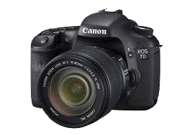

-
Luís Ojembarrena Eguiguren
Nací en la localidad de Llodio (Álava) en el año 1957. Desde pequeño me he sentido atraído por la naturaleza, actualmente resido en el Valle de Mena (Burgos). Desde el año 1983 el Valle de Mena me encantó por su belleza, sus montañas, por su naturaleza y lo que en ella habita. En el año 2001 di el primer paso a la fotografía digital con una compacta, en el año 2006 fue cuando me pase a la réflex digital y poco a poco he ido aprendiendo y ampliando el equipo. En fotografía mi debilidad son las aves, y a ellas les dedico la mayor parte de mi tiempo libre, primero observándolas, y después si es posible fotografiándolas. Soy socio de SEO/Birdlife y participo como voluntario en la realización de censos de aves en el Valle de Mena, Valle de Losa y montes de Lunada (Burgos). Mis aficiones son la Ornitología, la fotografía, la montaña, la informática y la naturaleza, captando en fotogramas lo que en ella habita, sobre todo aves.
 .png) |
|